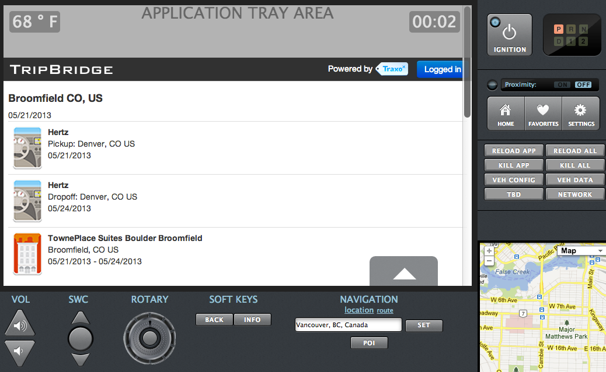

Pragmatic API Strategy
Traxo
Chris Stevens
Engineering and Operations @Traxo
Engineer / Developer / Consultant
Pilot
Travel Industry
Large, Entrenched, Traditional Suppliers.
Disruptive Newcomers.
NO APIs.
Big Problems
Fewer Travel Agents.
More Travel Websites.
Massive fragmentation.
DIY Travelers (38%)
Manually organizing travel details.
Multiple travel sites.
Stale information with limited portability.
Traxo
"The Mint.com for travel"
Comprehensive travel aggregator.
Deep travel industry experience.
5-yr Dallas "Startup".
190 Travel Sources
Few Supplier-Side APIs
Consumer Channels
- Website (2008)
- Mobile Website (2010)
- Calendar Feeds (2010)
- Embeddable Widgets (2010)
- iOS/Android Mobile Apps (2013)
Traxo API
An evolution
Proof of Concept - 2011
A true "MVP".
A single CakePHP controller.
Attached to existing web application.
Manual api_key distribution.
Documentation on Google Sites.
Good enough.
Product - Today
Dedicated codebase.
Tuned for API serving.
Shared Middleware Libraries.
OAuth2.
Self-service developer portal
New Opportunities
Commercialization. Monetization. Growth.
Mobile apps. Mashups.
Partnerships
"With the Traxo solution integrated with SAP Cloud for Travel, we expect our customers will have access to integrated travel itinerary and booking data in new ways – via a single channel," said Joe Fuster, senior vice president, Cloud, Customer and Money Line-of-Business Solutions, SAP.
Third-Party Integrations
API Strategy
A lot like flying...
Planning is Important
But just get started

Many Routes
Pick one that supports your business

Know your Audience
You will discover new ones
Monetization
Support
Measure Everything
Lessons Learned
From 5 years of bootstrapping
Frameworks
Use what works for you
Infrastructure
Code
Versioning
OAuth
Measure Everything
3Scale
Questions?
Twitter: @stevenscg
Github: @stevenscg